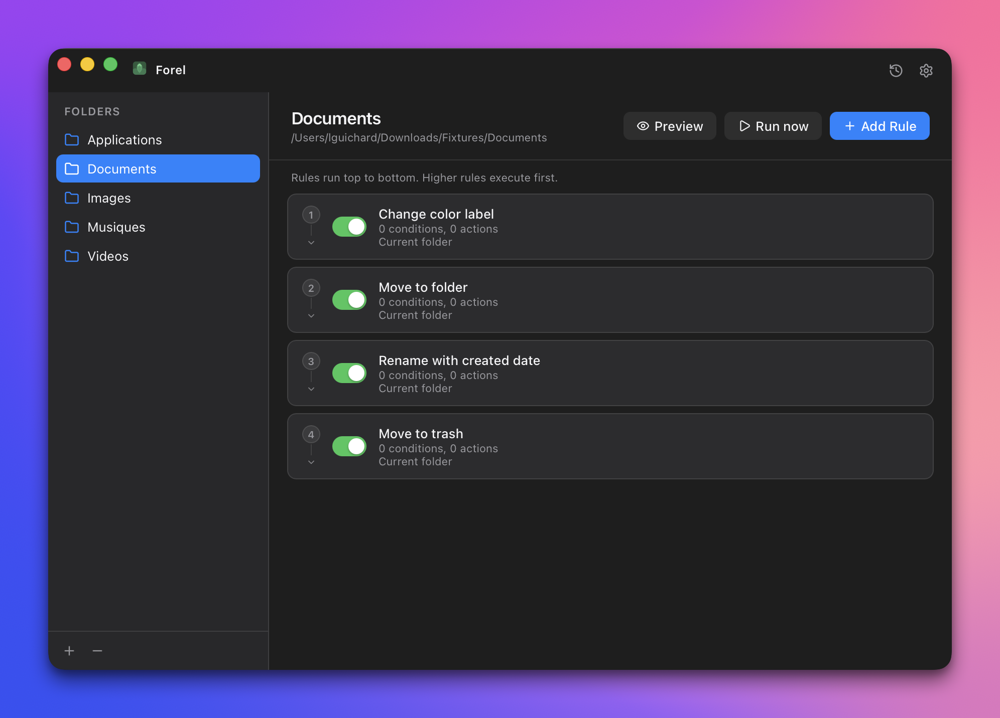
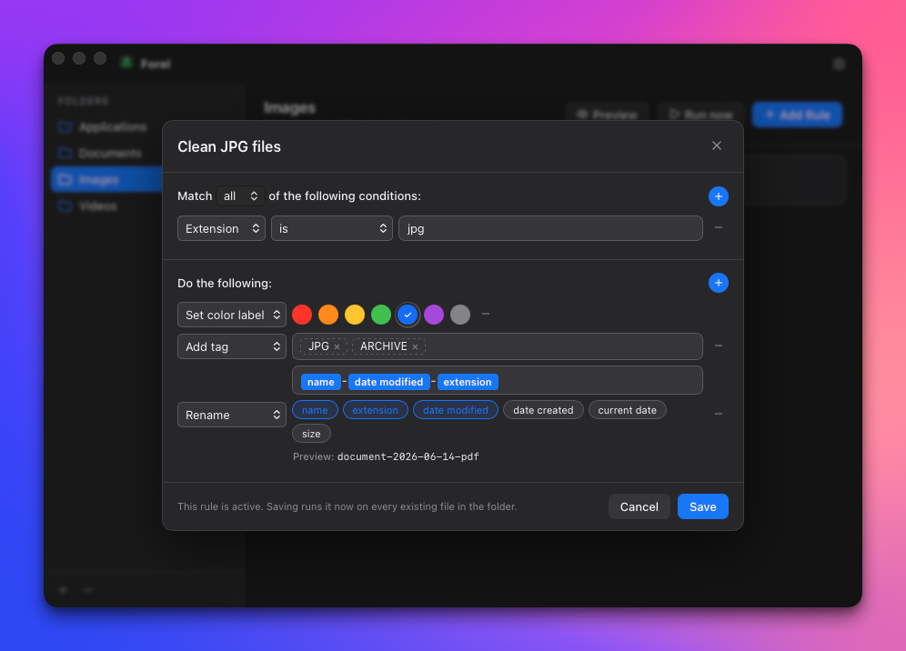
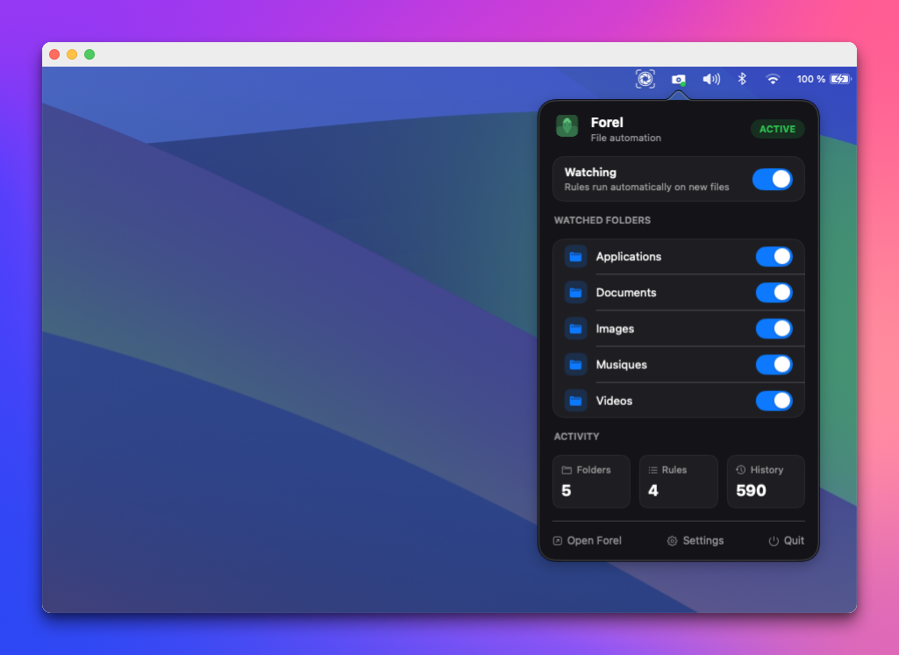

Everything happens locally
No accounts, no telemetry, no remote processing. Rules and history are stored in a local SQLite database.
Open source for macOS
The Hazel alternative for macOS. Watch folders, match files with clear rules, and move, rename, tag, or label them automatically on your Mac.
macOS 14+ · 100% on-device · Open source



Folder automation
Forel watches selected folders and applies actions when files match your rules. Keep Downloads, screenshots, invoices, and work folders organized without dragging files around by hand.
Rules that stay understandable
Forel keeps automation visible: choose what should match, then choose what should happen. Preview changes before running them.
No accounts, no telemetry, no remote processing. Rules and history are stored in a local SQLite database.
Use Finder tags, color labels, folders, scripts, and the menu bar patterns that feel native on macOS.
Forel is built in the open with Tauri, Rust, React, and SQLite. Inspect the code, suggest improvements, or contribute.
Open source
Forel is open source and community-driven. Download the app, inspect the source, suggest improvements, or contribute to the next version.